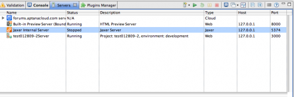
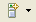
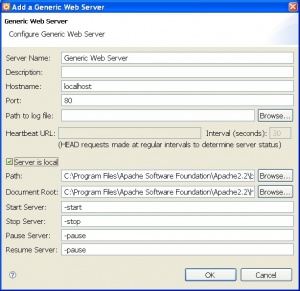
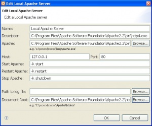
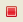
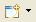
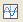

Use the Servers View to start, stop, and manage your servers in Aptana Studio.
Contents |
Displaying the Servers View
From the Aptana menu, select the Show Views submenu and choose Servers
  Servers view
Servers view
{kind=link}
Adding or Configuring a server
- On the Servers view toolbar, click the Add Server button 
- Select the type of server that you want to add or configure and click OK--choices include Generic Web Server, Internal Jetty Server, Jaxer, Jaxer+Apache, Local Apache, MySQL and Rails but your list may differ depending on your specific confiuguration
- Fill in the information for your server, including server name, host name, port, path to log file and document root as well as settings specific to the server type
- Click OK
{kind=link}
 Generic Webserver settings
{kind=link}
 Local Apache settings
{kind=link}
Starting a server
Select the server in the Servers View and click the Start Server button .
{kind=link}
Restarting a server
Select the paused server in the Servers View and click the Restart Server button
{kind=link}
Stopping a server
Select the server in the Servers View and click the Stop Server button .
{kind=link}
Monitoring your servers
The Servers View provides you with access to several tools to monitor and help troubleshoot your server:
- Click the Open Console button to open a console view 
- Click the Open Log button to open a log in the TailView View
- Click the View Statistics button to ping the server and view statistics for it 
{kind=link}
{kind=link}
{kind=link}
Related Topics
- Displaying Aptana Views
- About the Jaxer server
- Getting Started with Jaxer in Aptana Studio
- Creating a new Jaxer project
- Previewing a Jaxer project
- About Jaxer Views
- Configuring your Jaxer servers
- Setting your TailView preferences
- JaxerManager_Command_Line_Interface_(CLI) Reference
- Running the Jaxer server diagnostic tools